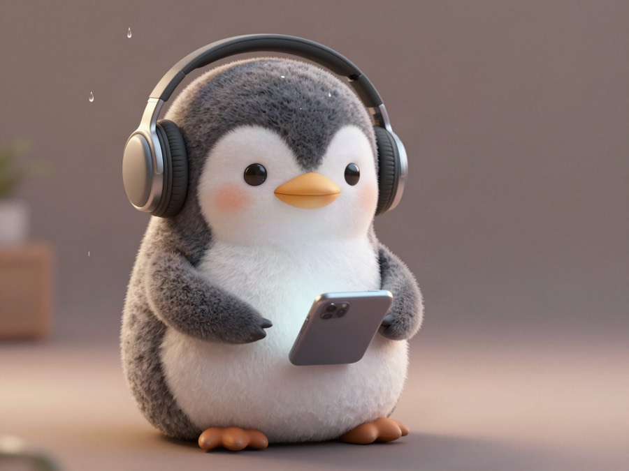
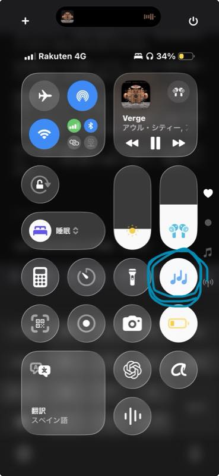
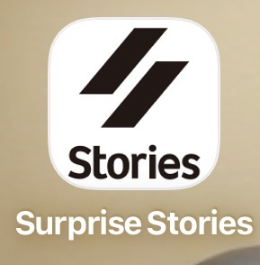

🐧 EVERYDAY LIFE⚡ 30 SEC
A quietly favorite iPhone feature of mine is the rain sound in Control Center 🐧

A Quiet Favorite
There is an iPhone feature I quietly like.
Rain Sound
It is "rain sound." 🌧️
For Podcasts
I use it especially when I am listening to content with no background sound of its own, like a podcast.
Blocking Noise
It can block out a little bit of the noise around me with the sound of rain, so I like it.

Surprise Stories
For example, when I listen to Makonari-shacho's paid podcast "Surprise Stories," I often play rain sound behind it. 🎧

Keeps Playing
My favorite part is that even while Spotify or YouTube is playing, the rain sound keeps playing along with it.
😌🎧✨
PREVIOUS POST
Mario Kart is fun no matter how old you are, and I always ride the bike, not the car